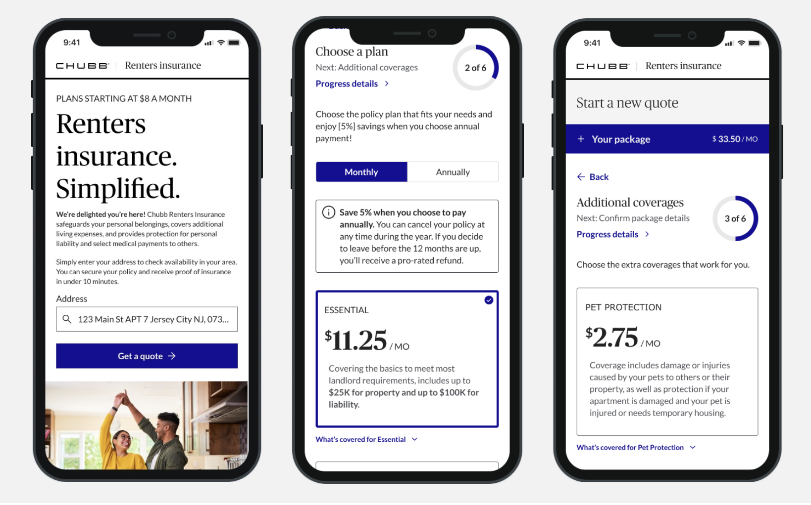
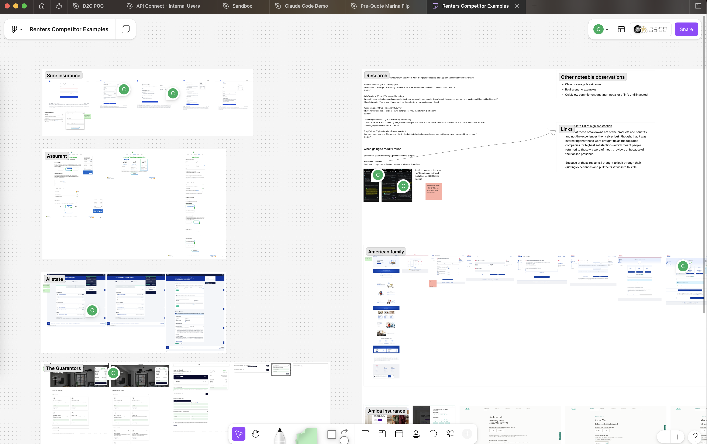
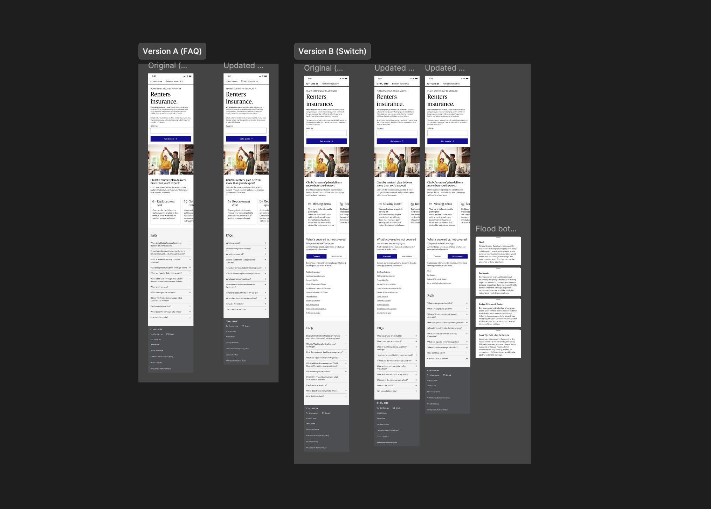

Designing Chubb's first direct-to-consumer renters insurance platform. A fully digital, mobile-first experience built to remove the agent from the equation and meet younger customers where they already are.

Role
Lead UX Designer
Timeline
8 months, 2024–25
Tools
Figma, Chubb AI
Impact
94% task success rate
01 — Context & Challenge
Chubb's client base was aging. Younger, emerging-wealth customers who were renters just starting to build their lives weren't finding their way in. Not because the product didn't fit them, but because the only path to it ran through an agent. For a generation that researches, compares, and buys everything online, that friction was a dealbreaker.
The business case was clear: build a fully digital, direct-to-consumer renters insurance experience. No phone calls, no agents, no friction. Quote, customize, and purchase in under 10 minutes on mobile.
The goal wasn't just to digitize a product. It was to make insurance feel like something this generation would actually choose to buy.
02 — Research & Discovery
The research strategy was intentionally mixed. I started with a competitor audit, pulling through the quoting experiences of Sure Insurance, Assurant, Allstate, The Guarantors, American Family, and Amica. I then paired it with Reddit research to surface unsolicited user voices from people who had actually shopped for renters insurance. No screener, no moderator bias, just real opinions.
Later, the landing page decision was tested through a combined qualitative and quantitative study: a talk-out-loud session to capture behavior and real-time reactions, with measurable task success rates and time-on-task data to back it up.
What the discovery phase found:

03 — Design & Key Decisions
The scope covered the full customer lifecycle: new business quote flow (including not-eligible states, pet endorsement, and change of address), first notice of loss for claims filing, policy endorsements (add/remove coverage, edit limits, cancellation), and two MVP phases. I led the research, planned all designs, and managed stakeholder alignment throughout.
The most contested decision was the landing page. Stakeholders wanted to hide all coverage detail inside FAQs, which kept the page visually clean but buried the information users needed to make a purchase decision. I pushed for a different approach: a visible switch that surfaced what's covered and what's not covered, without any digging required.
Rather than debate it, we tested it.
| Version A — FAQ | Version B — Switch | |
|---|---|---|
| Task success | 33% | 94% |
| Task failure | 67% | 6% |
| Avg. time on task | 3 min 36s | 1 min 1s |
| Ready to purchase | 72% | 94% |

"Definitely this section helped me clearly understand what is covered and what is not covered...this section is the one that got this Renters insurance sold to me."
— Research participant, Version B
The data made the case. Stakeholders reviewed the findings, acknowledged the results, and shipped the FAQs anyway. The switch lives on in Figma, perfectly preserved, waiting for someone to change their mind.
04 — What I'd Do Differently
Budget constraints meant responsive designs only covered the happy path. Every other flow got a template and a handoff. I would have pushed earlier to make full responsive coverage a non-negotiable part of the scope rather than letting it become a phase 3 nice-to-have.
I also would have built in usability testing across the full end-to-end experience. The landing page was validated, but the quote flow, endorsements, and claims experience never went in front of real users. That's a gap I'd close given the chance.
05 — Outcomes & Impact
The platform is currently in development, with a Q1 2026 launch target. No post-launch metrics exist yet. The work speaks through its scope and the research that shaped it.
The full customer journey was designed end-to-end: new business quoting, first notice of loss for claims, and policy endorsements including add/remove coverage, limit edits, and cancellation. That's a complete digital experience for a product that previously required a phone call at every step.